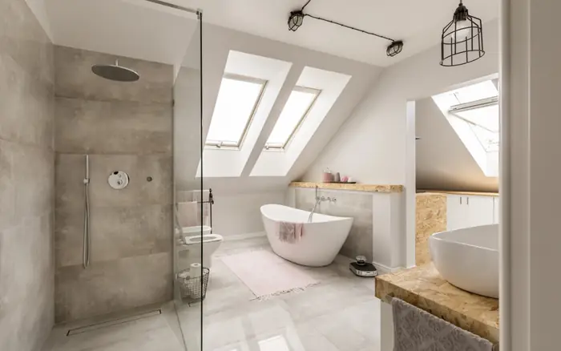
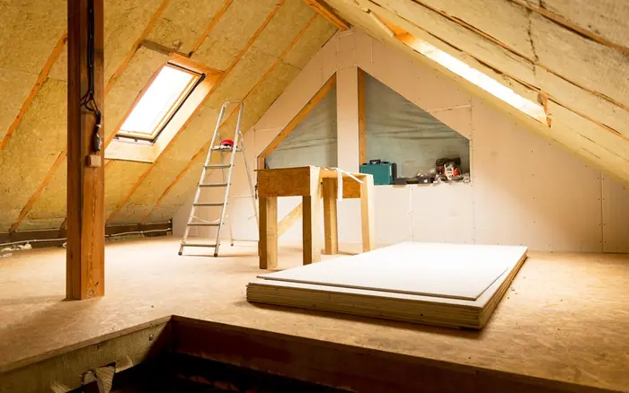
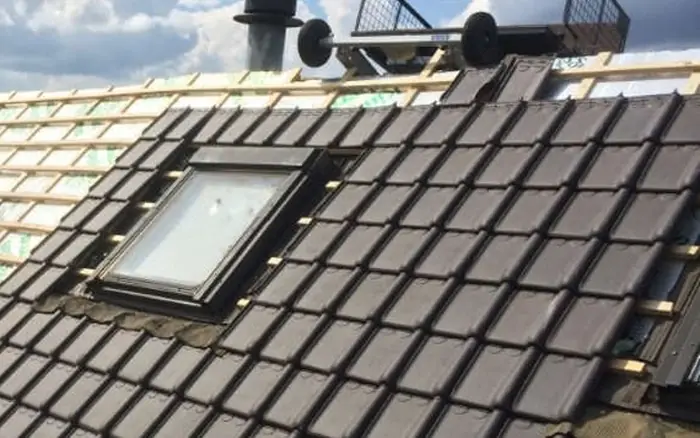
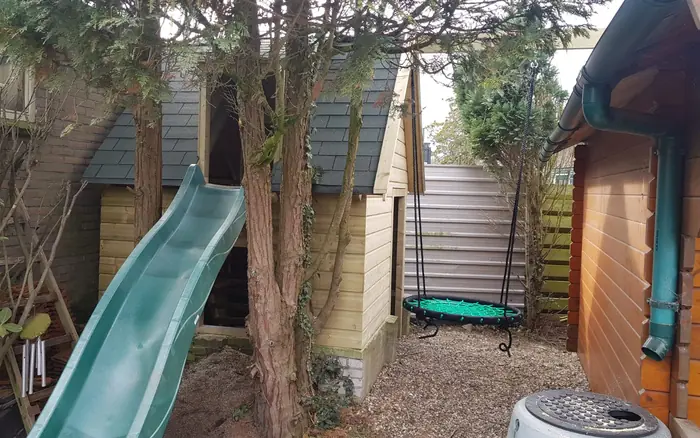
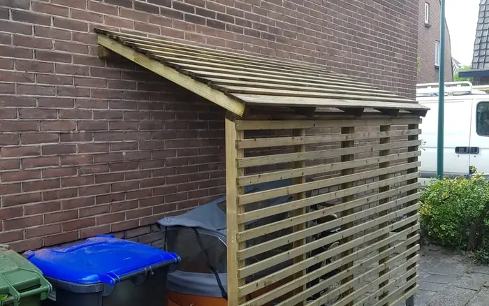

Keuken
Oude keuken eruit, nieuwe erin, en de ruimte eromheen meteen mee gemoderniseerd.
- Bestaande keuken demonteren
- Nieuwe keuken plaatsen
- Leidingen verleggen
"De Raaf Bouw en Onderhoud levert verschillende diensten en kan u van begin tot eind helpen met de bouw en/of renovatie van uw woning of bedrijfspand." Zo staat het op de eigen site.
Oude keuken eruit, nieuwe erin, en de ruimte eromheen meteen mee gemoderniseerd.

Een volledige badkamer, met het sanitair dat u zelf uitkiest en inkoopt.

Van zolder naar volwaardige verdieping, ook met een badkamer erbij.

Een nieuw dak dat er een jaar later nog steeds goed uitziet, volgens Svenja.

"Een Douglas houten veranda/overkapping ontworpen en gemaakt te Zeist."

"Een grote speel-villa met etage en glijbaan ontworpen en gemaakt te Zeist."

"Een afdak voor de fietsen ontworpen en gemaakt te Maarssen." En een houten schutting die "solide gebouwd" is, schreef Reshmi.
Binnen of buiten: vertel wat u voor ogen heeft, dan wordt er meegedacht.